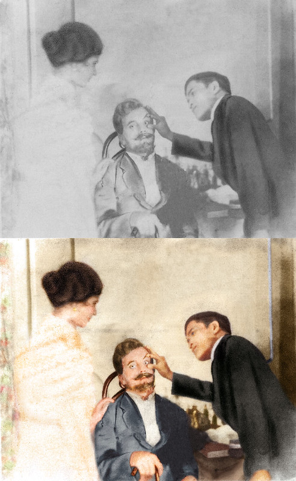
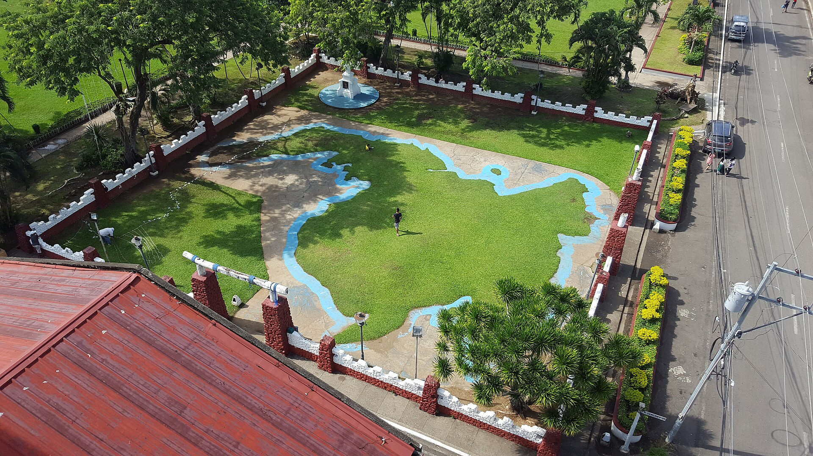

Dapitan · 1892—1896
Rizal,
Doctor & Entrepreneur
"I want to do all I can for this town"
Dapitan had a very dire situation when Rizal came - having no assistance from colonial authorities, no parks, no streetlights, no irrigation system, and no hospitals. Despite this, the citizens were still required to pay taxes and give their weekly offerings to the church.
I · The Physician

Treating PatientsHealing
the
community.
Rizal was an eye specialist and was known for first curing his own mother, Dona Teodora.
Establishment
Charges
Patients
II · The Social Entrepreneur
Transforming
Dapitan.
Rizal engaged in what we now call "social entrepreneurship" - investing in the community itself with large-scale transformations to benefit not only oneself, but the society of that area.
First Water System
Kiln for Brickmaking
Relief Map of Mindanao
Clean-up of Marshes
Sociedad de Agricultores Dapitanos
Community Lighting System

Relief Map of Mindanao